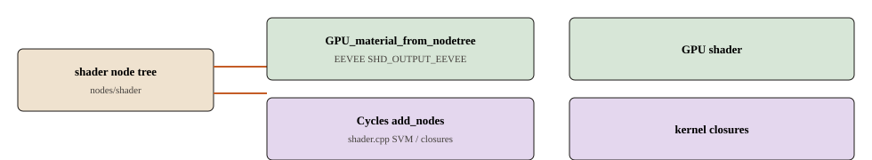

实时引擎吃 GPU 材质
路径 draw/engines/eevee/。eevee::Instance 从 depsgraph 取求值 Scene / ViewLayer。F12 走 eevee_render → DRW_render_to_image，仍是光栅，不是 Cycles kernel。

GPU_material_from_nodetree。Cycles：add_nodes。不是同一份机器码。它解决什么
视口和部分 F12 要在光栅管线上出像素。EEVEE 吃求值场景和 GPU 材质；Workbench 用更便宜的 Solid / 线框，不编译完整节点树。两者都不是 Cycles kernel。
节点 → GPU
ShaderModule::material_shader_get → GPU_material_from_nodetree（gpu/intern/gpu_material.cc，目标 GPU_MAT_EEVEE）。内部 inline_shader_node_tree(SHD_OUTPUT_EEVEE)，再 ntreeGPUMaterialNodes / ntreeExecGPUNodes（nodes/shader/）。
/* 视口一帧里 EEVEE 吃的是求值 Scene */ eevee::Instance ← DEG_get_evaluated_scene / ViewLayer /* F12 仍是光栅 */ eevee_render → DRW_render_to_image
Workbench
draw/engines/workbench/workbench_engine.cc。Solid / 线框 / 快速 F12。不走完整着色节点 GPU 材质：MatCap、工作室光、cavity。建模看结构时最常碰到。
和邻居的边界
| 引擎 | 吃什么 | 不吃什么 |
|---|---|---|
| EEVEE | 求值 Scene / GPU 材质 | 未求值的 BMesh、SVM 字节码 |
| Workbench | MatCap、工作室光、cavity | 完整 Principled 节点树 |
| F12 + EEVEE | DRW_render_to_image 光栅 | 路径追踪 kernel |